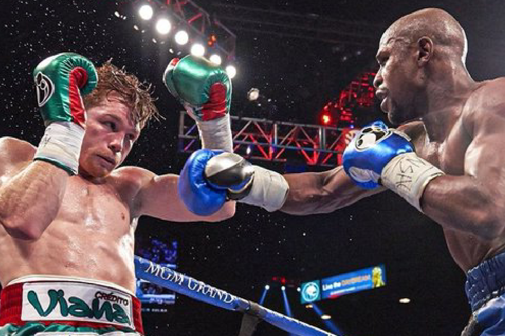
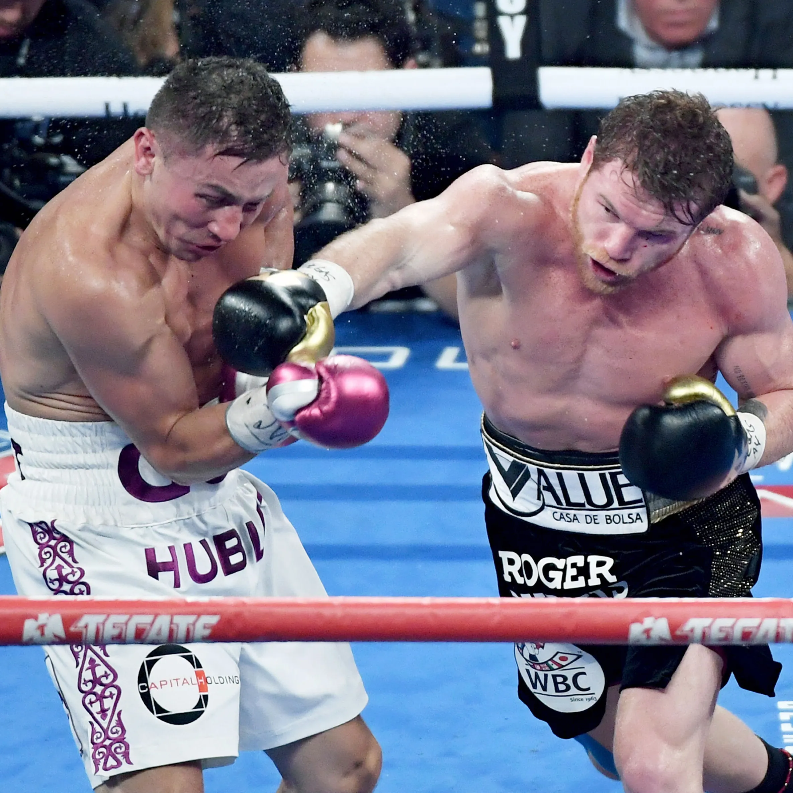
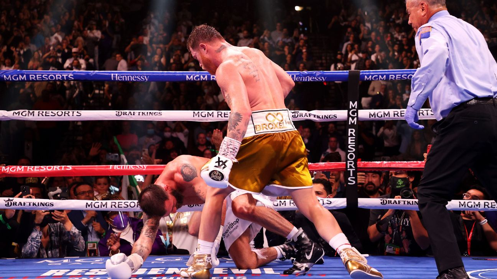

Works (Important Fights)
1. vs. Floyd Mayweather (September 14, 2013)

His first professional loss. Mayweather won by majority decision in a huge fight, but Canelo learned from it and came back stronger.
2. vs. Gennady Golovkin I and II (2017 and 2018)

Their first fight in September 2017 ended in a controversial draw. In the rematch a year later, Canelo won by majority decision. It is one of the greatest rivalries of this era.
3. vs. Sergey Kovalev (November 2, 2019)

In his light heavyweight debut, Canelo knocked out former champion Kovalev in round 11 and won the WBO title, making him a champion in a fourth weight class.
4. vs. Caleb Plant (November 6, 2021)

Canelo stopped Plant in round 11 in Las Vegas and became the undisputed super middleweight champion, holding all four major belts.